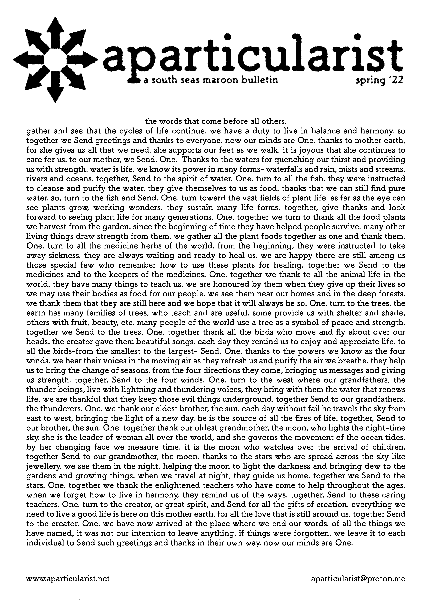

gather and see that the cycles of life continue. we have a duty to live in balance and harmony. so together we Send greetings and thanks to everyone. now our minds are One. thanks to mother earth, for she gives us all that we need. she supports our feet as we walk. it is joyous that she continues to care for us. to our mother, we Send. One. Thanks to the waters for quenching our thirst and providing us with strength. water is life. we know its power in many forms- waterfalls and rain, mists and streams, rivers and oceans. together, Send to the spirit of water. One. turn to all the fish. they were instructed to cleanse and purify the water. they give themselves to us as food. thanks that we can still find pure water. so, turn to the fish and Send. One. turn toward the vast fields of plant life. as far as the eye can see plants grow, working wonders. they sustain many life forms. together, give thanks and look forward to seeing plant life for many generations. One. together we turn to thank all the food plants we harvest from the garden. since the beginning of time they have helped people survive. many other living things draw strength from them. we gather all the plant foods together as one and thank them. One. turn to all the medicine herbs of the world. from the beginning, they were instructed to take away sickness. they are always waiting and ready to heal us. we are happy there are still among us those special few who remember how to use these plants for healing. together we Send to the medicines and to the keepers of the medicines. One. together we thank to all the animal life in the world. they have many things to teach us. we are honoured by them when they give up their lives so we may use their bodies as food for our people. we see them near our homes and in the deep forests. we thank them that they are still here and we hope that it will always be so. One. turn to the trees. the earth has many families of trees, who teach and are useful. some provide us with shelter and shade, others with fruit, beauty, etc. many people of the world use a tree as a symbol of peace and strength. together we Send to the trees. One. together thank all the birds who move and fly about over our heads. the creator gave them beautiful songs. each day they remind us to enjoy and appreciate life. to all the birds-from the smallest to the largest- Send. One. thanks to the powers we know as the four winds. we hear their voices in the moving air as they refresh us and purify the air we breathe. they help us to bring the change of seasons. from the four directions they come, bringing us messages and giving us strength. together, Send to the four winds. One. turn to the west where our grandfathers, the thunder beings, live with lightning and thundering voices, they bring with them the water that renews life. we are thankful that they keep those evil things underground. together Send to our grandfathers, the thunderers. One. we thank our eldest brother, the sun. each day without fail he travels the sky from east to west, bringing the light of a new day. he is the source of all the fires of life. together, Send to our brother, the sun. One. together thank our oldest grandmother, the moon, who lights the night-time sky. she is the leader of woman all over the world, and she governs the movement of the ocean tides. by her changing face we measure time. it is the moon who watches over the arrival of children. together Send to our grandmother, the moon. thanks to the stars who are spread across the sky like jewellery. we see them in the night, helping the moon to light the darkness and bringing dew to the gardens and growing things. when we travel at night, they guide us home. together we Send to the stars. One. together we thank the enlightened teachers who have come to help throughout the ages. when we forget how to live in harmony, they remind us of the ways. together, Send to these caring teachers. One. turn to the creator, or great spirit, and Send for all the gifts of creation. everything we need to live a good life is here on this mother earth. for all the love that is still around us, together Send to the creator. One. we have now arrived at the place where we end our words. of all the things we have named, it was not our intention to leave anything. if things were forgotten, we leave it to each individual to Send such greetings and thanks in their own way. now our minds are One.
this is a manual compression of a Haudenosaunee thanksgiving address. the source can be found here. the goal was for it to fit onto a piece of A4 paper and still be readable. for any loss in meaning or effect i can only apologise, and leave it you you decompress the words in a way that helps you best.
what are you gateful for, down here in otautahi, in the midst of the south seas? what part does gratitude play in your life? email any old thing to aparticularist@proton.me